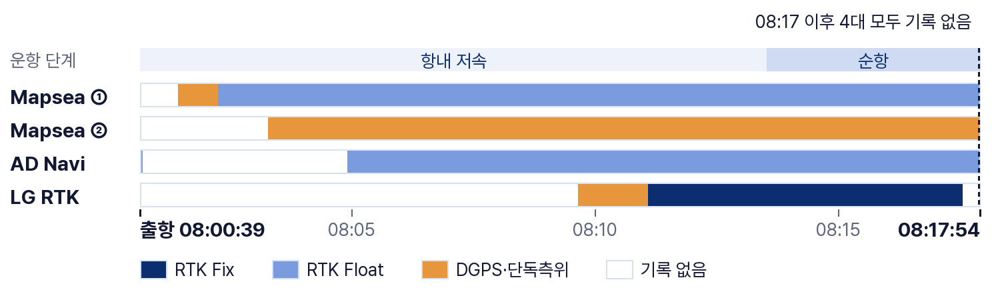
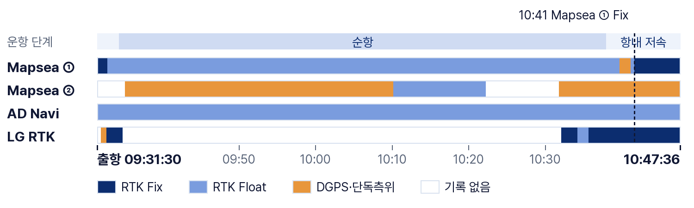
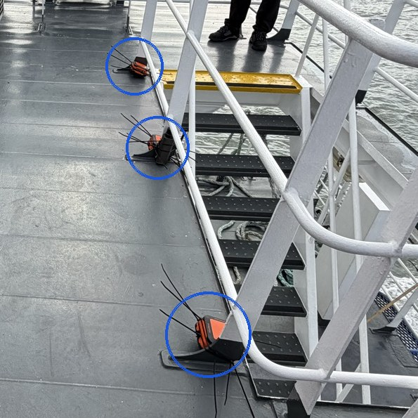
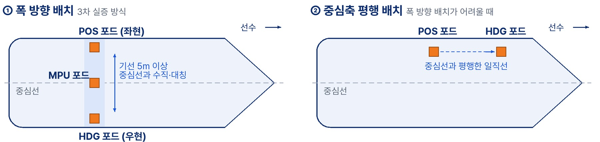

2026년 10월 15일 · 인천–덕적 여객선 KOREA PEACE · 작성 김동현
| 일시·선박 | 2026-10-15(목) 인천–덕적 여객선 KOREA PEACE. 인천 08:00 출항, 덕적도 09:31 출항 후 인천 10:47 접안 |
|---|---|
| 장비 | RTK 4대: Mapsea RTK ①(듀얼 안테나), Mapsea RTK ②(PPP 모드), AD Navi XR2, LG RTK |
| 보정 | Mapsea ①·AD Navi는 해수부 NTRIP, LG는 앱 NTRIP 중계, Mapsea ②는 보정 없이 PPP |
08:17~08:18에 4대 모두 연결이 끊겨 인천항에서 6.3km(전체의 약 14%)까지만 기록됨.

| 장비 | Fix | Float | DGPS·단독 | 미기록 | 결과 |
|---|---|---|---|---|---|
| Mapsea ① (듀얼 안테나) | 0% | 89.1% | 5.2% | 5.7% | 출항 구간 내내 Float |
| Mapsea ② (PPP 모드) | 0% | 0% | 84.1% | 15.9% | 단독측위만 출력 |
| AD Navi XR2 | 2.6% | 72.7% | 0% | 24.7% | 출항 직후 4분 기록 없음 |
| LG RTK | 33.0% | 4.4% | 8.3% | 54.3% | 08:09부터 기록 |
09:31 덕적도 출항부터 10:47 인천 접안까지 76분을 기록함. Mapsea ①과 AD Navi는 이 구간 전체가 남아 있음.

| 장비 | Fix | Float | DGPS·단독 | 미기록 | 결과 |
|---|---|---|---|---|---|
| Mapsea ① (듀얼 안테나) | 9.6% | 86.7% | 3.7% | 0% | 접안 직전 10:41부터 Fix, 오차 ±0.02m |
| Mapsea ② (PPP 모드) | 0% | 15.5% | 66.9% | 17.6% | PPP 수렴 전, Wi-Fi 끊김 12분 |
| AD Navi XR2 | 0.2% | 99.6% | 0.1% | 0.1% | 끝까지 Float, 헤딩 대부분 미출력 |
| LG RTK | 21.3% | 2.1% | 1.2% | 75.4% | 운항 중 56분 기록 없음(USB 끊김) |
참고: Mapsea ① 헤딩은 자선 AIS와의 차이가 시간대마다 −158°~+94°로 바뀌어 쓸 수 없음(듀얼 안테나 설정 확인 필요). NTRIP 끊김(Mapsea ① 5회, AD Navi 2회)은 모두 4초 안에 재연결됨.
| 항목 | 로그 값 | 판단 |
|---|---|---|
| 보정 수신 | RTK 보정 미수신 경보 0.5%, 위치 포드 RTK 데이터 없음 경보 0회 | 정상 |
| 위성 수 | 위치·헤딩 포드 모두 32개 (매뉴얼 기준 7개 초과) | 충분 |
| 기준국 거리 | 4~34km, 10:10~10:30에는 4~6km (매뉴얼 기준 50km 미만) | 충분히 가까움 |
| 위치 포드 | Fix 0.2%, 나머지는 Float | Fix 실패 |
| 헤딩 포드·헤딩 | 헤딩 포드 Fix 2.4%, 헤딩 출처 UNKNOWN 97.6% | 헤딩 미출력 |
보정·위성·기준국 거리가 모두 정상인데 위치 포드가 Fix를 못 했으므로, 포드 주변의 수신 환경이 원인일 가능성이 높음. 매뉴얼도 Fix 실패·헤딩 경보에 대해 "하늘이 트인 곳으로 옮기라"고 권장함(MAN-0102 8.1, p.14).
| 원인 후보 | 매뉴얼 기준 | 3차 실증 | 가능성 |
|---|---|---|---|
| ① 기둥이 신호를 가리고 반사시킴 | 포드 반경 80~100cm 안에 장애물 없음 (UM 14장 p.17) GNSS는 반사·장애물에 약함 (UM 11장 p.10) | 포드를 계단 난간 기둥에 케이블 타이로 묶음(그림 3) | 높음 |
| ② 포드 사이 기선이 짧음 | 기선 최소 5m (UM 11장 p.11) | 약 2.4m(로그) | 낮음 헤딩·선수 위치 정확도에 영향 |
| ③ 두 포드가 대칭이 아님 | 같은 평면, 중심선에서 같은 거리로 대칭 (UM 11장 p.10) | 중심선 거리 실측 기록 없음 | 낮음 헤딩·선수 위치 오차에 영향 |
②·③은 헤딩·선수 위치 정확도에 영향을 줄 뿐 RTK Fix와는 무관함. 기둥에 묶어 설치한 것이 가장 유력한 원인임.

